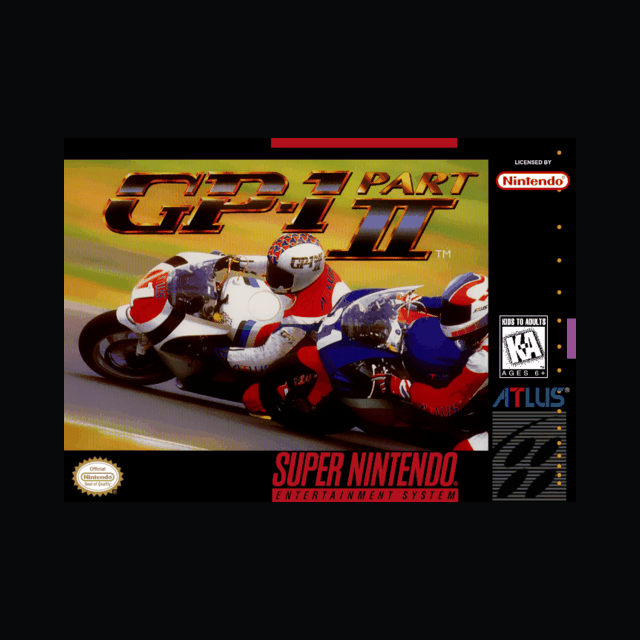

GP-1 - Part II
Super Nintendo (SNES)
▶ Jogar agoraGP-1 - Part II — clássico de Super Nintendo. Jogue direto no navegador.
Roda direto no navegador (celular ou PC), sem instalar nada. Tem controles de toque e salvar jogo.

Super Nintendo (SNES)
▶ Jogar agoraGP-1 - Part II — clássico de Super Nintendo. Jogue direto no navegador.
Roda direto no navegador (celular ou PC), sem instalar nada. Tem controles de toque e salvar jogo.